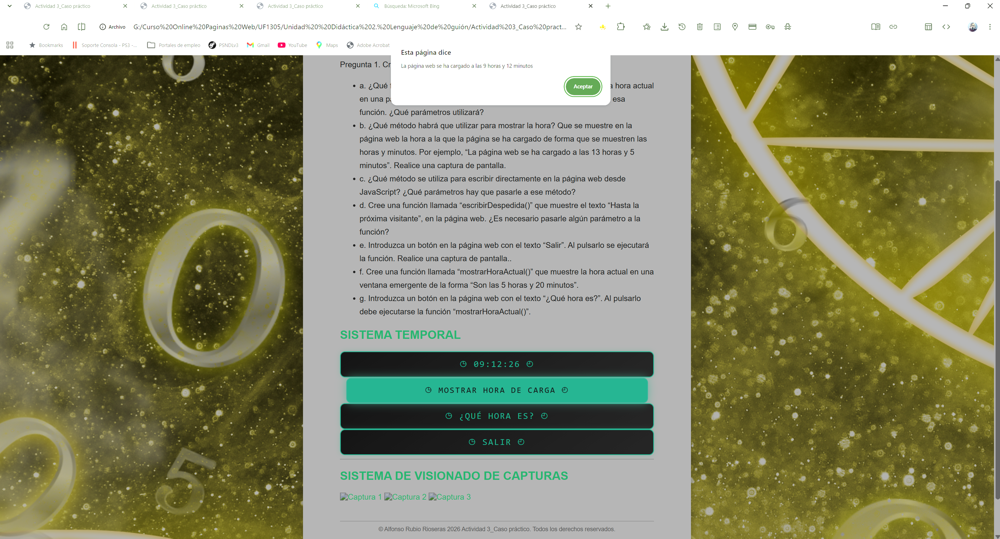
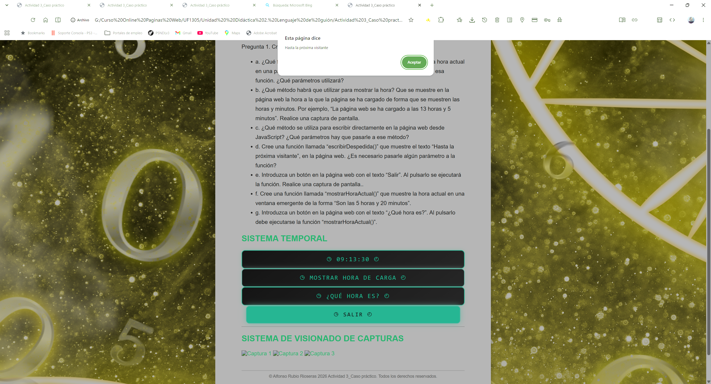

Actividad 3_Caso práctico
Integración de componentes software en páginas web (MF0951_2)
Programación con lenguajes de guión en páginas web (UF1305)
Unidad Didáctica 2. Lenguaje de guión
PREGUNTAS/ACTIVIDADES A REALIZAR
Pregunta 1. Cree un nuevo documento html.
SISTEMA TEMPORAL
00:00:00
SISTEMA DE VISIONADO DE CAPTURAS


Banda Sonora
Nota: Escucha la música de fondo.
© Alfonso Rubio Rioseras 2026 Actividad 3_Caso práctico. Todos los derechos reservados.